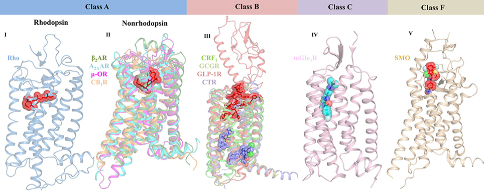

El receptor del glucagón es un miembro de la familia de los receptores asociados a proteínas G y se activa por su ligando, el glucagón. Este receptor es una importante diana para el tratamiento de la diabetes y la obesidad.
El páncreas está constituido, entre otras células, por los islotes de Langerhans, que son numerosas estructuras de tamaño variable, que se encuentran distribuidas por todo el páncreas especialmente en la cola. Representan apróximadamente el 2% del volumen total de este órgano. Dentro de los islotes destacan las células alfa y beta pancreáticas que son las responsables de sintetizar y secretar glucagón e insulina respectivamente, siendo estas 2 hormonas las principales reguladoras de la homeostasis y el metabolismo de la glucosa[1].
El glucagón es un polipéptido de 29 aminoácidos. Se obtiene del procesamiento del preproglucagón, constituido por 180 aminoácidos de los cuales 20 constituyen el péptido señal y el resto la molécula de proglucagón. El proglucagón, además del glucagón contiene las secuencias del péptido similar al glucagón (GLP, glucagon-like peptide) tipo 1 y 2, la oxintomodulina y la glicentina[1]. El procesamiento del preproglucagón en los diferentes tejidos ocurre como consecuencia de la expresión diferencial de enzimas denominadas prohormonas convertasas (PC), de las cuales la PC1 se expresa a nivel de cerebro y células L del intestino liberando predominantemente glicentina, GLP-1 y GLP-2, y, por otro lado, la PC2 expresada a nivel de las células pancreáticas, que liberan principalmente glucagón[2].
La secreción de glucagón, al igual que la liberación de insulina, está regulada fundamentalmente por los niveles de glucosa en plasma. En este sentido, cuando disminuyen los niveles de glucosa en sangre, se estimula la actividad del canal de potasio dependiente de ATP, lo que conlleva la apertura de canales de Na+ y Ca2+ dependientes de voltaje. Como consecuencia, se despolariza la membrana e incrementa la conductancia al Ca2+, el cual favorece la exocitosis de los gránulos del glucagón. Al aumentar la glucemia se produce un incremento en la concentración intracelular de ATP. Como consecuencia, se cierran los canales de potasio y se detiene la secreción de glucagón[2].
Se ha demostrado que la insulina cuando se une a su receptor provoca, por un lado, hiperpolarización de la membrana mediada por el canal de potasio, y por otro lado, transloca hacia la membrana celular un receptor tipo A de ácido gamma-aminobutírico (GABA), el cual responde al GABA secretado por las células favoreciendo la hiperpolarización de la membrana y suprimiendo la secreción de glucagón. Además de la glucosa y la insulina, existen otros factores capaces de regular la secreción de glucagón, entre ellos: GLP-1, GLP-2, ácidos grasos, el sistema nervioso autónomo y los aminoácidos circulantes[3].
Los efectos del glucagón son mediados por la unión a su correspondiente receptor, el receptor del glucagón. La unión del glucagón a su receptor activa la adenilato ciclasa provocando un aumento del AMP cíclico intracelular que determina la activación de la proteinquinasa A (PKA), la cual fosforila enzimas claves que ponen en marcha todas las acciones biológicas del glucagón (Figura 1) Además, el glucagón también se ha visto que está implicado en vías de señalización como la de la proteínquinasa asociada a mitógenos (MAPK) y la proteinquinasa dependiente de adenosín monofosfato (AMPK)[4].
El receptor de glucagón es una proteína que se encuentra en membrana de las células beta del páncreas y que tiene un peso molecular de 63 kDa. Pertenece a la superfamilia de receptores acoplados a proteínas G (GPCRs). Los receptores acoplados a proteínas G en vertebrados están divididos en 5 familias según su secuencia y estructura: familia de receptores similiares a la rhodopsina (familia A), a la secretina (familia B), al glutamato (familia C), familia de adhesión (familia E) y familia frizzled (familia F)[5].
Todos los miembros de los GPCRs comparten una arquitectura común de siete transmembranas (7TM o 7TMD) unidas por tres bucles extracelulares (ECL) y tres intracelulares (ICL). Sin embargo, tienen poca identidad de secuencia y poseen diferentes dominios extracelulares N-terminales y distintos bolsillos de unión a ligando (Figura 2). En el caso de los GPCR de clase A, el ligando endógeno es reconocido por un sitio de unión a ligando en la región 7TM. Sin embargo, en el caso de los GPCR de clase B, el ligando es reconocido tanto por el dominio extracelular como por el 7TM.
En el caso de los GPCR de clase C, el bolsillo de unión al ligando se encuentra en el dominio extracelular (ECD) y en el caso de los GPCR de clase F, tanto los receptores SMO como los FZD poseen un ECD compuesto por un dominio extracelular rico en cisteína (CRD) y un dominio enlazador ECD[5].
A resumidas cuentas y basándonos en el apartado a) de la Figura 3, el receptor del glucagón consta de siete dominios transmembrana (7TM) unidas por tres bucles extracelulares (ECL, extracelular loops) y tres bucles intracelulares (ICL, intracelular loops), un dominio extracelular (ECD, extracelular domain) y un tallo o stalk.
Además, en el apartado a) de la Figura 4 podemos observar qué residuos componen cada estructura y que el ECL1 une la hélice alfa II con la III mientras que el ECL2 une la hélice IV con la V y el ECL3, la hélice VI con la VII. Por otro lado, también se pueden observar los ICL que unen las hélices I y II, la III y la IV y la V y VI.
3.1. Región peduncular de la hélice I
Los receptores acoplados a proteínas G (GPCR) de la clase A y B comparten menos del 15% de homología de secuencia pero ambos comparten el dominio 7TM, es decir, que poseen la misma oritentación y posición de las hélices alfa. No obstante, una diferencia importante entre las dos clases es que el extremo N-terminal de la hélice I en el receptor del glucagón (GCGR) de clase B es más largo que cualquier otro receptor acoplado a proteínas G de clase A y, además, este se extiende tres vueltas helicoidales por encima de la membrana extracelular. Esta región se denomina tallo (stalk) y se puede observar en el apartado a) de la Figura 3 bajo el nombre de Stalk. Está implicado en la unión del glucagón y ayuda a definir la orientación del dominio ECD con respecto al dominio 7TM[6].
3.2. Bolsillo de unión
Además, se sabe que la distancia entre los extremos de las hélices II y VI y, por otro lado, la distancia entre las hélices III y VII es mucho mayor que la existente entre esas mismas hélices en otros GPCR. Como consecuencia, se crea una cavidad más ancha y profunda en el bolsillo de unión al ligando del GCGR, que es mayor que en cualquier estructura de receptor de clase A. Esto significa que el glucagón se une mucho más cerca de la membrana celular [7]. En la Figura 5 se puede observar el bolsillo de unión.
3.3. Hélice intracelular VIII
Otra de las características de los receptores de clase B es el hecho de que la hélice VIII se encuentra inclinada 25º y es más larga que la hélice VIII de la clase A. Esta inclinación se debe a la Glu406 que se encuentra totalmente conservada en los receptores de la familia B. Este residuo forma puentes salinos interhelicoidales con los residuos conservados Arg173 y Arg346[8].
3.4. Otras características estructurales
El enlace de hidrógeno que se establece entre la Ser152 de la hélice I y la Ser390 de la hélice VII estabiliza ambas hélices. Este enlace se forma debido a la proximidad de estas Ser[8].
Cabe destacar que el receptor del glucagón carece de una Pro en la hélice VII. Este residuo está muy conservaod en los GPCR de clase A. En su lugar, los GPCRs de clase B, poseen un residuo de Gly en la posición 393 que permite un pliegue helicoidal de la hélice VII. Esta curvatura se estabiliza por la interacción hidrofóbica entre la Gly393 y la Phe184 de la hélice II del GCGR[6].
En el dominio intracelular, las distancias entre las puntas de las hélices del GCGR son muy parecidas al del resto de estructuras de clase A excepto por un amplio desplazamiento hacia dentro de la hélice VII. Aunque el desplazamiento hacia el interior de la parte intracelular de la hélice VII es un sello distintivo de la activación de los receptores de clase A3, aún no está claro qué papel desempeña la esta región de la hélice VII en el GCGR[9].
El loop extracelular ECL1 del GCGR tiene 16 residuos de longitud, en comparación con los 4-6 residuos de la mayoría de los GPCRs de clase A. Aunque los residuos 201-215 del ECL1 no están resueltos, los estudios de mutagénesis indican que estos residuos están implicados en interacciones con ligandos peptídicos[10].
Como ya se ha mencionado antes, es la estructura 7TM la que se encuentra conservada entre ambas clases. Por ejemplo, ambas clases poseen un enlace disulfuro entre Cys 294 del ECL2 y la Cys 224, que estabiliza el pliegue 7TM del receptor[8].
Además, de este enlace disulfuro que se encuentra tanto en los receptores de clase A y de clase B, cabe destacar que el dominio extracelular globular N-terminal está definido por tres enlaces disulfuro que se encuentran conservados en todos los GPGRs de clase B aunque no se encuentran en la clase A[6].
Otra característica conservada implica que cuando se pliegan los receptores de clase A y B, en ambos casos se producen contactos entre las hélices I-II, I-VII, III-IV y III-VI. Sin embargo, las dos clases de GPCR contienen residuos en estas posiciones. En los GPCRs de clase B, la interacción hélice I-II está estabilizada por residuos hidrofóbicos conservados Leu156 y Phe184 mientras que los GPCRs de clase A contienen residuos polares conservados Asn y Asp en esta región[11].
El glucagón contiene ligandos que interactúan tanto con el ECD como con el TMD. En ausencia de glucagón, el GCGR adopta una conformación cerrada en la que los tres bucles extracelulares (ECL1, ECL2 y ECL3) interactúan con el ECD. En este caso, el ECD cubre la superficie extracelular de la 7TM. Para pasar de un estado a otro, el ECD gira y desciende hacia el dominio 7TM. Diversos estudios han sugerido que los ligandos peptídicos se unen a los GPCR de clase B según un modelo de unión de dos dominios, en el que la región C-terminal del péptido se dirige al ECD permitiendo que la región N-terminal del péptido se une al bolsillo de unión del TMD y active la proteína. Cuando el ligando se une a su receptor, el dominio transmembrana TMD experimenta un cambio de conformación y transduce la señal a las proteínas G[7].
Como se acaba de mencionar, cuando el glucagón se une a su receptor se produce un cambio de conformación por lo que pasa de una conformación cerrada a una abierta. La conformación activa, o abierta, posee un movimiento intracelular hacia fuera de las hélices V y VI que se genera al romper los enlaces de hidrógeno entre Arg173-Ser350 y Glu245-Thr351. Además, para llegar a esta conformación, se produce una rotación extracelular del ECD hasta que se encuentra casi perpendicular a la superficie de la membrana. Mientras que la región peduncular de la hélice I ayuda a facilitar el movimiento del ECD, el acoplamiento intracelular de la proteína G y la unión extracelular del glucagón estabilizan este estado activo[12]. En la Figura 6 podemos observar las diferencias entre la conformación abierta y cerrada.
Los residuos del bolsillo de unión pueden ser polares o hidrofóbicos. El extremo N-terminal del glucagón se une al ECD mientras que el resto del glucagón se inserta en el bolsillo de unión.[12]
Por tanto, podemos decir que los loops extracelulares (ECD) del GCGR proporcionan la selectividad inicial del ligando, mientras que el bolsillo de unión del ligando del TMD proporciona el reconocimiento secundario y proporcionan afinidad de unión al glucagón[12].
El tallo interactúa directamente con el glucagón, ya que, como se ha mencionado antes, se extiende casi tres vueltas helicoidales por encima de la membrana. Cuando se pasa de una conformación abierta a una cerrada, hay una sustitución de la Ala135 por una Pro que tiene menor afinidad por el glucagón. Como consecuencia, el tallo ya no tiene afinidad para unirse al ligando[12].Estudios de mutagénesis han determinado los residuos esenciales y conservados en el glucagón. Por ejemplo, la Asp63, Tyr65 y Lys98 estabilizan la región ECD. Además, la cadena lateral Trp36 es un importante sitio de interacción hidrofóbica para la región C-terminal del glucagón[12].
El tallo se encuentra en una conformación de hélice alfa y está estabilizada por interacciones intrahelicoidales en la estructura cristalina (Glu133-Lys136). Asimismo, es probable que se estabilice aún más por interacciones con el ECL1 y por la interacción con el glucagón[8].
Además, se ha visto que los residuos Arg201, Tyr202, Asp208 y Trp215 del GCGR estabilizan la conformación ECL1 e interaccionan directamente con el glucagón. Otros residuos que interactúan con el glucagón son el Trp295 y Asn298 ya que la mutación de estos residuos ECL2 afecta fuertemente a la unión del ligando. Aunque las mutaciones de Asp218, Cys224, Arg225, Lys286, Glu290 y Cys294 también afectan a la unión del ligando, estos residuos no interaccionan directamente con el glucagón, pero pueden jugar un papel en la estabilización de la conformación del bucle compatible con la unión del glucagón. Por ejemplo, ECL2 y ECL1 están estabilizados por un puente disulfuro entre Cys294 y Cys224, y puentes salinos potenciales entre Lys286-Glu290, y Asp218-Arg225, respectivamente. Del mismo modo, se propone que Arg378 desempeña un papel en la unión del glucagón indirectamente al estabilizar la conformación ECL3, mientras que Trp304 estabiliza ECL2 en la interfaz entre las hélices V y VI[8].
En caso de hiperglucemia, se libera glucagón que aumenta la concentración de glucosa en sangre ya que, a nivel hepático inhibe la síntesis de glucógeno y favorece la glucogenólisis y la gluconeogénesis[13].
Además, el glucagón participa en el metabolismo de aminoácidos al favorecer la captación de aminoácidos tales como alanina, glicina y prolina, los cuales sirven de sustrato para la gluconeogénesis.
Por otro lado, en el adipocito, la lipasa sensible a hormona media la degradación de triglicéridos a ácidos grasos no esterificados y glicerol. El glucagón, aunque no modifica los niveles transcripcionales de esta enzima, sí aumenta la liberación de glicerol por parte del adipocito, pudiendo este servir como sustrato de la gluconeogénesis.
Asimismo, el glucagón inhibe la lipogénesis al reducir las concentraciones de malonil-CoA por un mecanismo dual: por un lado inhibe la glucólisis y por otro inhibe la acetil-CoA carboxilasa, y por ende al reducir los niveles de malonil-CoA favorece la cetosis al activar la enzima carnitina-palmitoil-transferasa que permite la entrada de ácidos grasos en las mitocondrias, donde son posteriormente oxidados a cuerpos cetónicos que pueden ser usados como combustible del sistema nervioso central en algunas circunstancias como el ayuno prolongado[1].
El receptor del glucagón interviene en diversas rutas metabólicas por lo que la inhibición de este receptor mediante la utilización de moléculas antagonistas como anticuerpos que se dirijan al receptor y bloqueen la interacción con otras moléculas puede inactivar vías de señalización específicas. La utilización de estas moléculas permitiría tratar la diabetes mellitus puesto que ayudaría a regular la concentración de glucosa en sangre[15].
Podemos utilizar tanto agonistas como antagonistas del receptor del glucagón. Los agonistas aumentan la activación del receptor. Esto podría tener efectos en personas con obesidad debido a que un agonista del receptor del glucagón podría promover la secreción de insulina y la lipólisis. Dados los efectos del glucagón para aumentar la producción hepática de glucosa, los agonistas del receptor de glucagón por sí solos no son una opción terapéutica adecuada. Sin embargo, se han desarrollado péptidos quiméricos de glucagón y GLP-1 que actúan como coagonistas de los GPCR de glucagón y GLP-1, y que han resultado eficaces para tratar la obesidad[15].
[1] Lima-Martínez, M. M., Betancourt, L., & Bermúdez, A. (2011). Glucagón: ¿Un simple espectador o un jugador clave en la fisiopatología de la diabetes? Avances En Diabetología, 27(5), 160-167. doi:10.1016/j.avdiab.2011.09.002
[2] Habegger, K. M., Heppner, K. M., Geary, N., Bartness, T. J., DiMarchi, R., & Tschöp, M. H. (2010). The metabolic actions of glucagon revisited. Nature reviews. Endocrinology, 6(12), 689–697. https://doi.org/10.1038/nrendo.2010.187
[3] Dunning, B. E., Foley, J. E., & Ahrén, B. (2005). Alpha cell function in health and disease: influence of glucagon-like peptide-1. Diabetologia, 48(9), 1700–1713. https://doi.org/10.1007/s00125-005-1878-0
[4] Kimball, S. R., Siegfried, B. A., & Jefferson, L. S. (2004). Glucagon represses signaling through the mammalian target of rapamycin in rat liver by activating AMP-activated protein kinase. The Journal of biological chemistry, 279(52), 54103–54109. https://doi.org/10.1074/jbc.M410755200
[5] Basith, S., Cui, M., Macalino, S. J. Y., Park, J., Clavio, N. A. B., Kang, S., & Choi, S. (2018). Exploring G Protein-Coupled Receptors (GPCRs) Ligand Space via Cheminformatics Approaches: Impact on Rational Drug Design. Frontiers in pharmacology, 9, 128. https://doi.org/10.3389/fphar.2018.00128
[6] Jeremy Johnson, R., Applegarth, J., Bennett, S., Caskey, S., Coatney, C., Corsbie, K., Cotter, A., Cotter, D., Coulis, A., Hansen, H., Hart, W., Koehler, C., Koelper, A., Kuhlman, S., Mitchell, C., Moskal, B., Murfield, O., Paton, A., Schemenauer, D., Stankavich, B., Taylor, C., Waibel, B. and Williams, L.D. (2017), Proteopedia entry: G-protein coupled receptors. Biochem. Mol. Biol. Educ., 45: 277-278. https://doi.org/10.1002/bmb.21026
[7] Zhang, H., Qiao, A., Yang, L., Van Eps, N., Frederiksen, K. S., Yang, D., Dai, A., Cai, X., Zhang, H., Yi, C., Cao, C., He, L., Yang, H., Lau, J., Ernst, O. P., Hanson, M. A., Stevens, R. C., Wang, M. W., Reedtz-Runge, S., Jiang, H., … Wu, B. (2018). Structure of the glucagon receptor in complex with a glucagon analogue. Nature, 553(7686), 106–110. https://doi.org/10.1038/nature25153
[8] Siu, F. Y., He, M., de Graaf, C., Han, G. W., Yang, D., Zhang, Z., Zhou, C., Xu, Q., Wacker, D., Joseph, J. S., Liu, W., Lau, J., Cherezov, V., Katritch, V., Wang, M. W., & Stevens, R. C. (2013). Structure of the human glucagon class B G-protein-coupled receptor. Nature, 499(7459), 444–449. https://doi.org/10.1038/nature12393
[9] Fredriksson, R., Lagerström, M. C., Lundin, L. G., & Schiöth, H. B. (2003). The G-protein-coupled receptors in the human genome form five main families. Phylogenetic analysis, paralogon groups, and fingerprints. Molecular pharmacology, 63(6), 1256–1272. https://doi.org/10.1124/mol.63.6.1256
[10] Xiao, Q., Jeng, W., & Wheeler, M. B. (2000). Characterization of glucagon-like peptide-1 receptor-binding determinants. Journal of molecular endocrinology, 25(3), 321–335. https://doi.org/10.1677/jme.0.0250321
[11] Venkatakrishnan, A. J., Deupi, X., Lebon, G., Tate, C. G., Schertler, G. F., & Babu, M. M. (2013). Molecular signatures of G-protein-coupled receptors. Nature, 494(7436), 185–194. https://doi.org/10.1038/nature11896
[12] Jeremy Johnson, R., Applegarth, J., Bennett, S., Caskey, S., Coatney, C., Corsbie, K., . . . Williams, L. (2016). Proteopedia entry: G-protein coupled receptors. Biochemistry and Molecular Biology Education, 45(3), 277-278. doi:10.1002/bmb.21026
[13] Janah, L., Kjeldsen, S., Galsgaard, K. D., Winther-Sørensen, M., Stojanovska, E., Pedersen, J., Knop, F. K., Holst, J. J., & Wewer Albrechtsen, N. J. (2019). Glucagon Receptor Signaling and Glucagon Resistance. International journal of molecular sciences, 20(13), 3314. https://doi.org/10.3390/ijms20133314
[14] Jazayeri, A., Doré, A. S., Lamb, D., Krishnamurthy, H., Southall, S. M., Baig, A. H., Bortolato, A., Koglin, M., Robertson, N. J., Errey, J. C., Andrews, S. P., Teobald, I., Brown, A. J., Cooke, R. M., Weir, M., & Marshall, F. H. (2016). Extra-helical binding site of a glucagon receptor antagonist. Nature, 533(7602), 274–277. https://doi.org/10.1038/nature17414
[15] Prasad-Reddy, L., & Isaacs, D. (2015). A clinical review of GLP-1 receptor agonists: efficacy and safety in diabetes and beyond. Drugs in context, 4, 212283. https://doi.org/10.7573/dic.212283

{kind=link}
{kind=link}
{kind=link}
{kind=link}
{kind=link}
{kind=link}